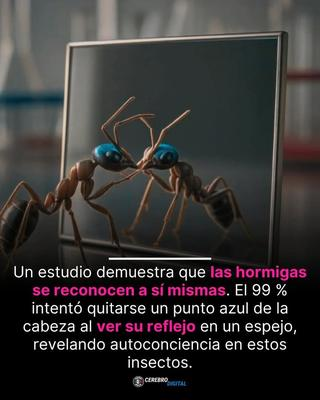

Desde hace ya varias décadas, ciertos hallazgos de la neurociencia han sido utilizados —y a menudo distorsionados— para reforzar narrativas filosóficas, «espirituales» e incluso religiosas, sobre la supuesta «naturaleza especial» del ser humano. Y uno de los ejemplos más claros es el de las llamadas «neuronas espejo», a las que con frecuencia se les atribuyen propiedades casi místicas. Según se ha dado a entender, éstas serían la base de la empatía, la compasión, la moral, la autoconciencia e incluso —en versiones más extravagantes— del «alma». Sin embargo, nada de eso está respaldado por la evidencia científica.


Pero comencemos por aclarar conceptos: ¿Qué son las neuronas espejo? — Las «neuronas espejo», «neuronas especulares» o «neuronas cubelli» (MNS por sus siglas en inglés: mirror neuron system), fueron descritas por primera vez en 1996, por el equipo del neurobiólogo italiano Giacomo Rizzolatti (n. 1937), en estudios realizados con macacos. Fueron llamadas así porque se activaban tanto cuando el animal ejecutaba una acción (por ejemplo, agarrar un objeto) como cuando observaba a otro individuo realizar la misma acción.
Desde entonces se ha demostrado que en los humanos existen sistemas neuronales análogos, hoy conocidos de forma más precisa como «redes de acoplamiento percepción–acción». Pero su función principal no es reflexiva ni introspectiva, sino pragmática: sólo permiten anticipar acciones ajenas, aprender por imitación y coordinar conductas sociales. Es decir, conviene subrayarlo con claridad: las neuronas espejo no generan autoconciencia, no constituyen un «yo», ni implican introspección o autorreflexión. Son solamente mecanismos automáticos, pre-reflexivos y no simbólicos.
Es cierto que estas redes neuronales participan en fenómenos como la empatía emocional básica, o sea, en la capacidad de resonar con el estado emocional de otro individuo. Y en tal sentido resulta pertinente la afirmación del biólogo y divulgador científico argentino Diego Golombek (n. 1964): «Sí: nuestro cerebro tiene entre sus funciones la empatía, el sentir con el otro». Pero añade algo especialmente relevante: «Ser solidarios, ser empáticos, es parte fundamental de la mayoría de las organizaciones sociales con base religiosa, y esto, también, está inscripto en el cerebro.»[1]
Esta observación es crucial, porque la empatía no nace de la religión, sino que la religión se apropia de una capacidad neurobiológica preexistente. La solidaridad, la cooperación y la compasión no son dones divinos, sino productos de la evolución de cerebros sociales. Y existen tanto en humanos como en otros animales sociales, independientemente de cualquier sistema de creencias.
Tenemos otro caso: la llamada risa contagiosa, que es un buen ejemplo[2]. No es algo que requiera autoconciencia ni reflexión, sino que ocurre de forma automática, cuando un cerebro social se sincroniza con otro. Es un fenómeno que está bien documentado tanto en humanos como en grandes simios; pero también existen análogos funcionales en otros mamíferos sociales, como ratas y perros. Pero una vez más, no hay aquí ningún «yo profundo», ni ninguna chispa metafísica: sólo contagio emocional, coordinado por redes neuronales distribuidas.
¿Y qué pasa con el test del espejo? —Se ha producido en esto una confusión conceptual, y tenemos el caso de las hormigas, convertido a veces en titulares sensacionalistas. Resulta que el llamado test del espejo fue diseñado en los años 1970 para primates con un sistema visual complejo. Consiste, de forma simplificada, en observar si un animal puede usar un espejo para detectar una marca en su propio cuerpo. Si lo hace, algunos investigadores hablan de autorreconocimiento. Pero aquí hay algo muy importante: autorreconocimiento no equivale a autoconciencia filosófica.
En el caso específico de las hormigas, se han publicado estudios en los que algunos de estos insectos, cuando observaron una marca coloreada en su cabeza reflejada en un espejo, intentaron limpiarla. Y este es un resultado que ha sido exagerado hasta el absurdo, afirmándose que «el 99 % de las hormigas demostró autoconciencia».
No obstante, desde una perspectiva neurobiológica rigurosa, esa conclusión es insostenible por varias razones:
Las hormigas no poseen neuronas espejo como las de los vertebrados.
Su sistema nervioso es radicalmente distinto y mucho más simple.
El comportamiento observado puede explicarse por integración sensorial y aprendizaje asociativo, no por un «yo» consciente.
No existe consenso científico en que estos experimentos demuestren autoconciencia, ni siquiera en un sentido mínimo.
Por tanto, lo que muestran estos estudios, en el mejor de los casos, es que un cerebro —o sistema nervioso— puede usar información visual externa como guía conductual, sin que eso implique introspección, identidad personal ni conciencia de existir.
Lo que sucede es que, en el fondo, tenemos aquí un problema de antropocentrismo. Porque hay un error que ha sido recurrente, tanto en discursos religiosos como en divulgación descuidada: proyectar conceptos humanos complejos (yo, identidad, alma, conciencia moral) sobre mecanismos biológicos simples. Sin embargo, lo cierto es que ni las neuronas espejo «explican el alma», ni la empatía es una prueba de trascendencia, ni una hormiga limpiándose una mancha frente a un espejo «sabe que existe». La neurociencia no respalda esas lecturas. Al contrario: las desmonta.
Así que digamos en conclusión, que las neuronas espejo —o, más correctamente, las redes percepción–acción— explican cómo los cerebros sociales coordinan conductas y emociones, no quiénes somos ni qué sentido tiene nuestra existencia. Y que la empatía y la solidaridad son capacidades biológicas, moldeadas por la evolución, compartidas en distintos grados por múltiples especies. El hecho de que las religiones las celebren no las vuelve sobrenaturales. Y que las hormigas muestren conductas complejas no las convierte en sujetos autoconscientes.
La ciencia, cuando se la deja hablar sin adornos metafísicos, es clara: no necesitamos dioses, almas ni misterios sobrenaturales, para explicar la empatía, la cooperación ni la conducta social.
[Godless Freeman]
https://www.instagram.com/apizacoyalrededores/p/DSyRFHOiKFL/?hl=bg
Comentarios
Comments powered by Disqus